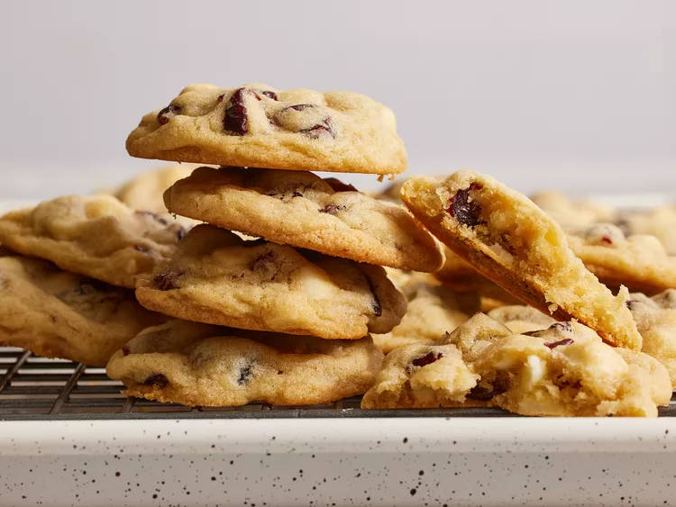

White Chocolate and Cranberry Cookies

Description
These white chocolate cranberry cookies, spiked with brandy, will quickly become a staple in your holiday rotation. They're smooth, creamy, and full of fruity flavor.
Ingredients
- ½ cup packed brown sugar
- ½ cup white sugar
- ½ cup unsalted butter, softened
- 1 large egg
- 1 tablespoon brandy
- 1 ½ cups all-purpose flour
- ½ teaspoon baking soda
- 1 cup dried cranberries
- ¾ cup white chocolate chips
Steps
- Preheat the oven to 375 degrees F (190 degrees C). Grease 2 cookie sheets.
- Beat brown sugar, white sugar, and butter with an electric mixer in a large bowl until creamy. Add egg and brandy and beat until incorporated.
- Combine flour and baking soda in a separate bowl. Stir flour mixture into the butter mixture until just combined. Fold in cranberries and white chocolate chips.
- Drop spoonfuls of dough 2 inches apart onto the prepared baking sheets.
- Bake in the preheated oven for 8 to 10 minutes, switching racks halfway through; cookies will still appear slightly doughy.
- Remove from the oven and let cool briefly on the cookie sheets before transferring to wire racks to cool completely.
Home page